Anime Scenes
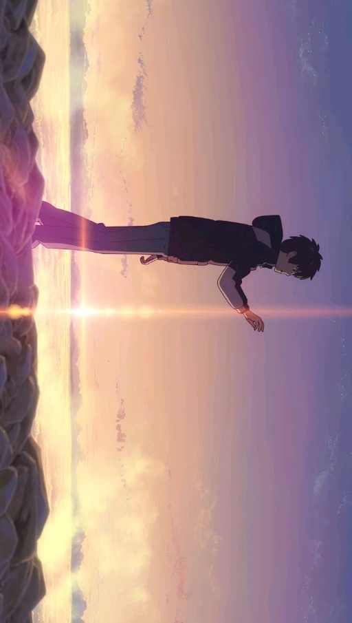
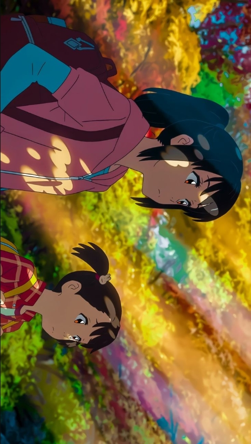
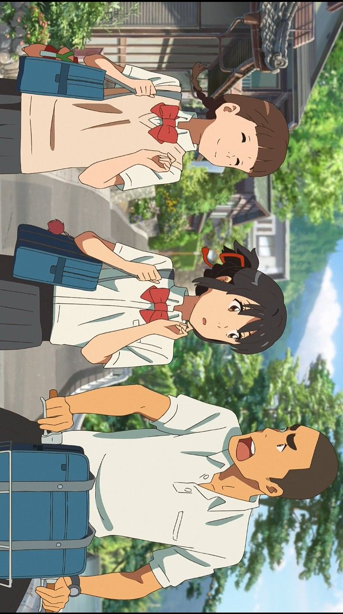
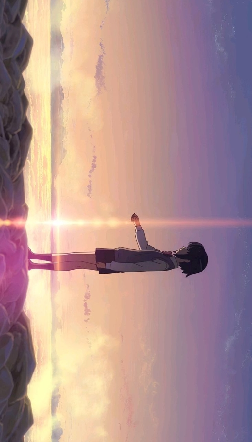
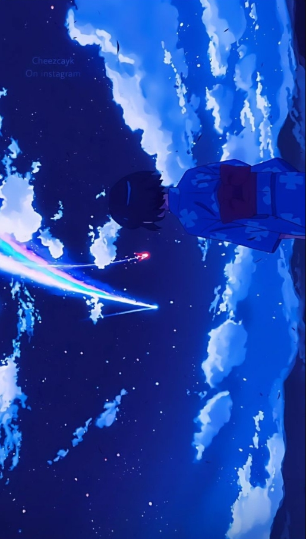
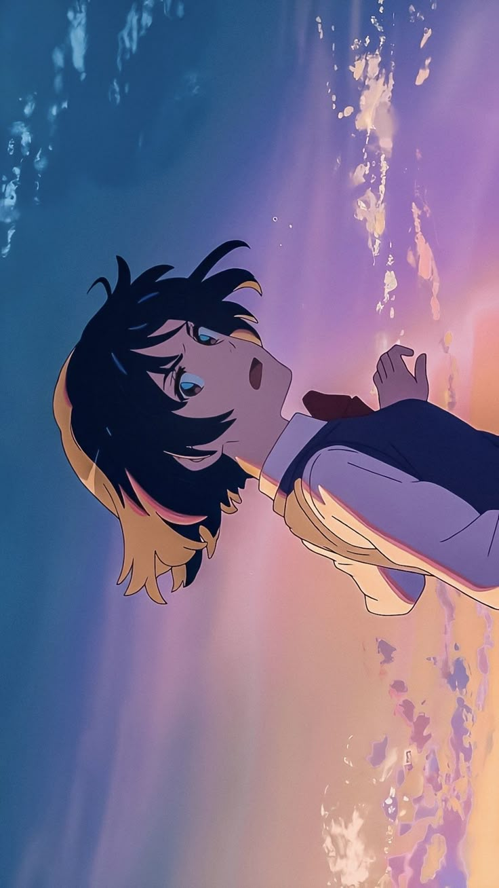
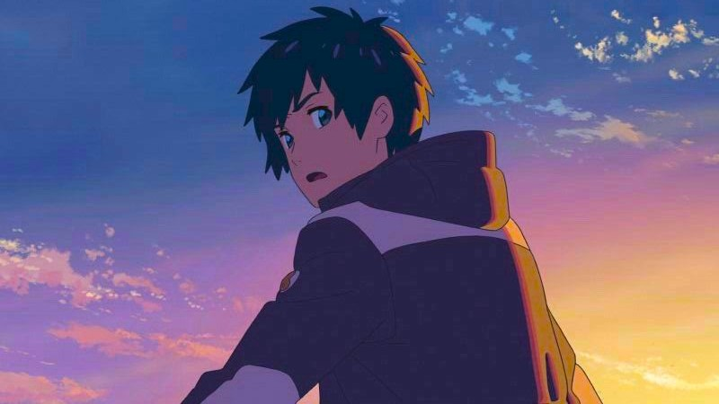
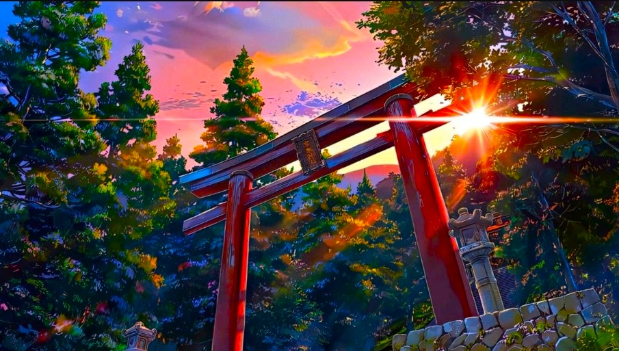
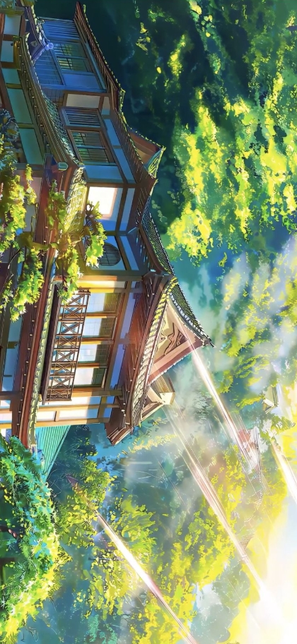
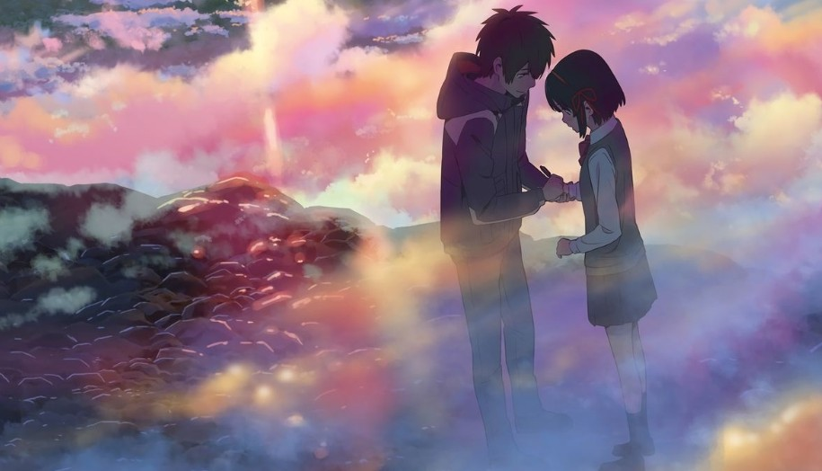
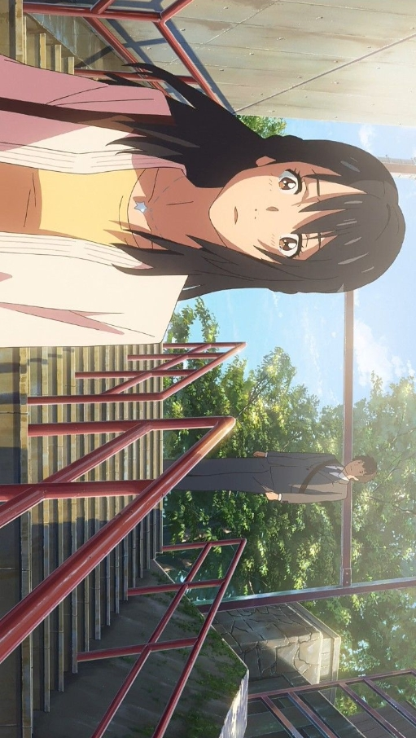
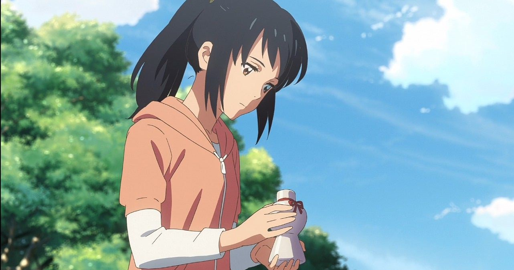
“I’m always searching for something, for someone. This feeling has possessed me, I think, from that day… That day when the stars came falling.”
Anime Studio: CoMix Wave Films
Director: Makoto Shinkai
Producer: Genki Kawamura
Distributor: Toho
Rating: ★ 8.4 / 10
Source: Original Story
Release Date: August 26, 2016
Duration: 1 hour 47 minutes
Music by: RADWIMPS
Genres: Romance, Fantasy, Drama, Supernatural
Country: Japan
Language: Japanese
Box Office: $382 million
Awards: Japan Academy Prize for Best Animated Film